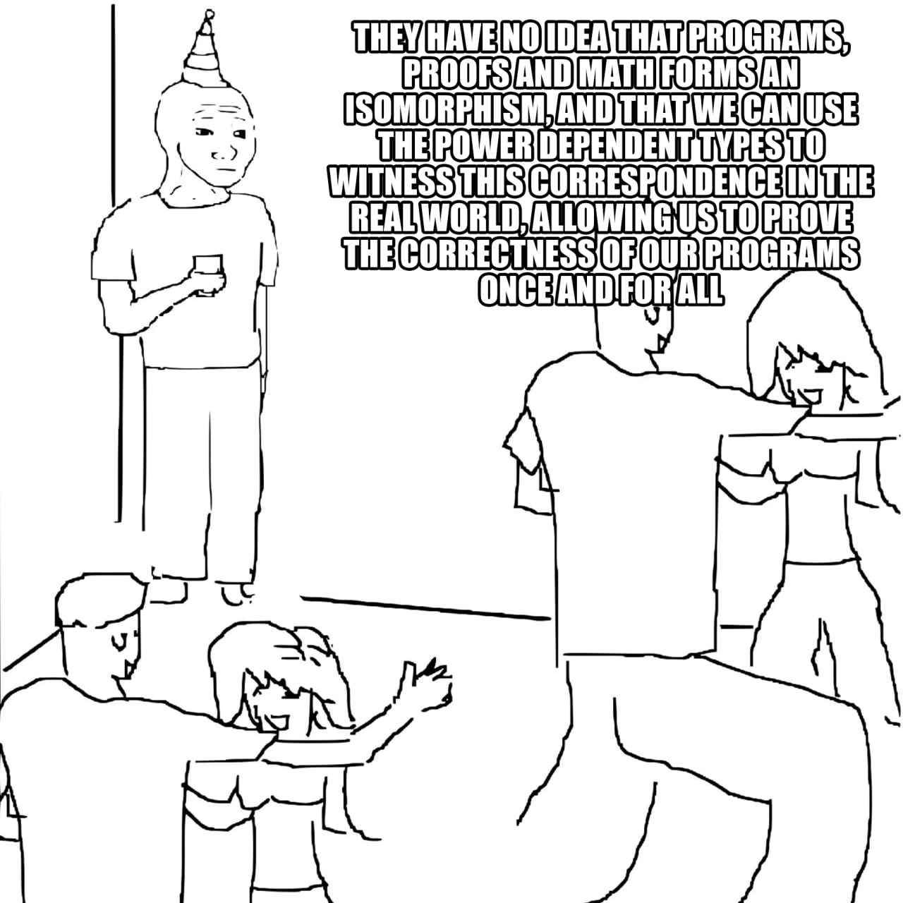
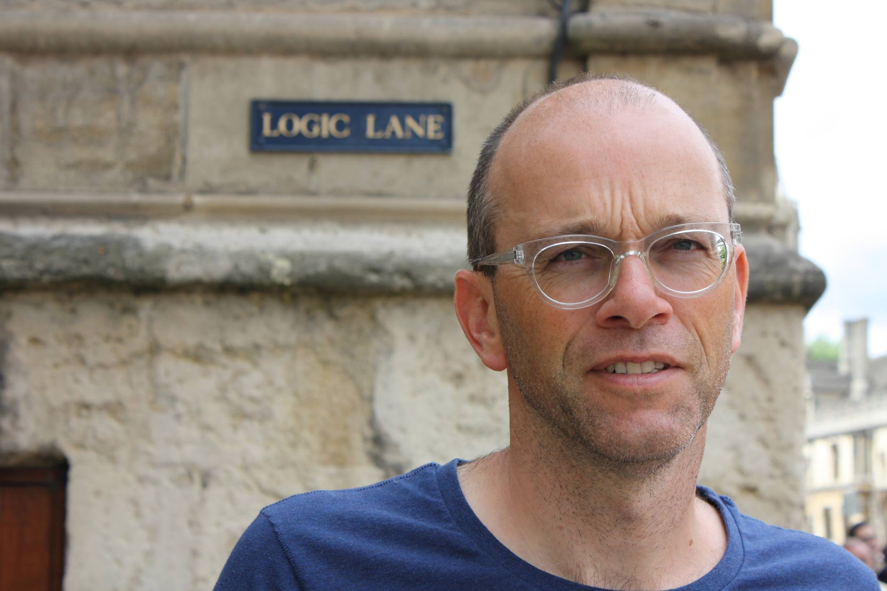
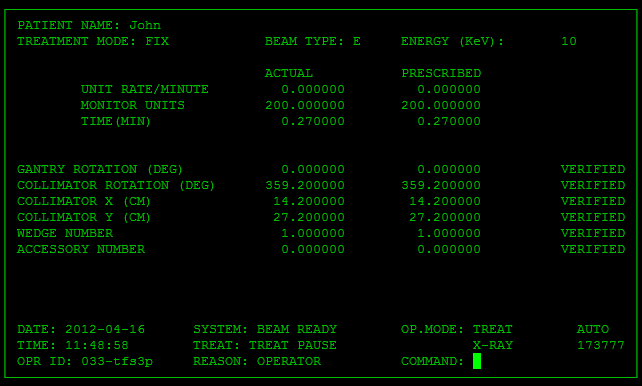
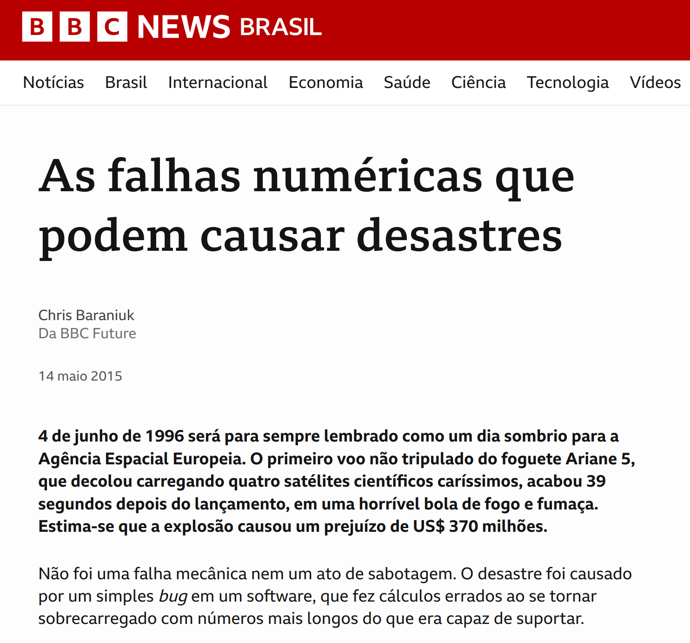
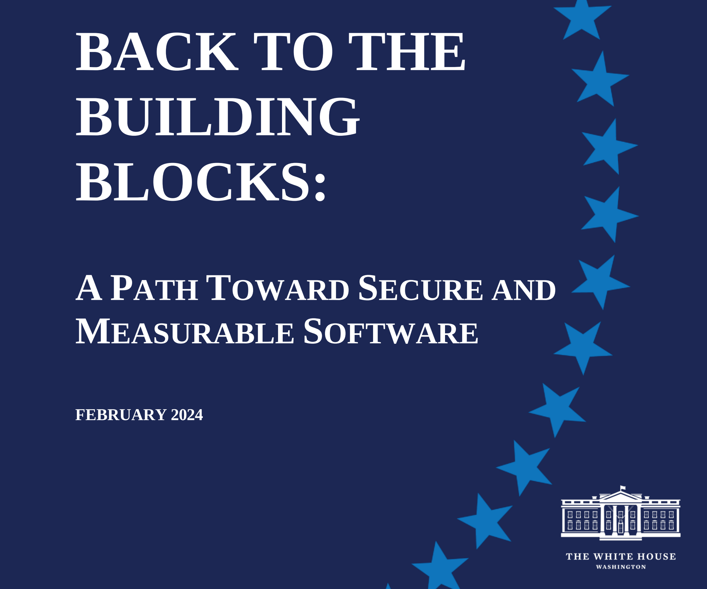

Por que e pra que métodos formais?
- 0.1 Introdução
- 0.2 Introdução II
- 1 Joost-Pieter Katoen
- 2 A Casa Branca
- 3 Leslie Lamport
- 4 Hillel Wayne
- 4.1 Hillel Wayne
- 4.2 Hillel's Pitch (WAYNE, 2019)
- 4.3 Achando bugs rapidamente (WAYNE, 2020)
- 4.4 Economizando no desenvolvimento e manutenção
- 4.5 Achando bugs em sistemas legado
- 4.6 Demo (Adaptada)
- 4.7 Demo - bug . Gabriela tem o sofá
- 4.8 Demo - características do bug
- 4.9 Quando não usar métodos formais
- 5 Outros
0.1 Introdução
Em todas as aulas dessa disciplina, eu vou estar, explicita ou implicitamente, tentando convencer vocês de que usar métodos formais para verificar sistemas complexos é importante.
Contudo, pessoas diferentes tem visões diferentes, e tem muita gente de respeito por aí falando da importância de métodos formais. Essa aula vai apresentar as respostas de outras pessoas à pergunta: Por que e pra que métodos formais?
0.2 Introdução II
Eu posso pensar como na figura abaixo, mas cada pessoa se motiva de uma forma diferente (por exemplo, ver Moving Motivators).

1 Joost-Pieter Katoen
1.1 Joost-Pieter Katoen

- Cientista teórico da computação
- Professor renomado e líder do Grupo de Modelagem e Verificação de
softwareda na universidade RWTH Aachen University.
- Um dos autores do livro "Principles of Model Checking", da bibliografia do curso
1.2 Impacto
O impacto que um bug pode ter varia muito de acordo com o tipo de sistema.
Vamos ver alguns exemplos de bugs que tiveram um impacto muito grande. Esses exemplos foram dados pelo professor Joost-Pieter Katoen em uma aula introdutória a model checking (KATOEN, 2013).
1.3 Overdose de radiação na Therac-25 (1985-87)

- Therac-25 era uma máquina de radioterapia controlada por
computador
- 6 acidentes por overdose de radiação (~100x da dose)
- 3 pacientes morreram
- 3 pacientes morreram
- Causa: software de controle entre dois modos de tratamento
1.4 Colapso da rede de telefonia da AT&T (1990)
- 9 horas de serviço interrompido em grande parte dos EUA.
- Causa: um
breakincorreto em C (deveria sair de umif, mas estava saindo de umswitch), que fez os computadores reiniciarem em cadeia a cada 6s.
- Prejuízo: Centenas de milhões de dólares
1.5 Acidente do míssel Ariane 5 (1996)

- Conversão de um float 64 bits pra um inteiro de 16 bits
1.6 Defeito de ponto flutuante (1994)
- Em inglês, Pentium FDIV bug
- Lançamento da família Pentium da Intel
- Uma das inovações era uma tabela para aumentar a velocidade de
multiplicação de ponto flutuante
- Ainda na fase de testes, descobriram um problema, mas acreditava-se
ser muito raro
- No fim, não era tão raro assim, e tiveram que fazer recall
dos produtos
- Ainda na fase de testes, descobriram um problema, mas acreditava-se
ser muito raro
- Prejuízo: ~500 milhões de dólares e grande perda de reputação da Intel
2 A Casa Branca
2.1 Documento da Casa Branca (HOUSE, 2024)

2.2 Parágrafo 1
Even if engineers build with memory safe programming languages and memory safe chips, one must think about the vulnerabilities that will persist even after technology manufacturers take steps to eliminate the most prevalent classes. Given the complexities of code, testing is a necessary but insufficient step in the development process to fully reduce vulnerabilities at scale. If correctness is defined as the ability of a piece of software to meet a specific security requirement, then it is possible to demonstrate correctness using mathematical techniques called formal methods. These techniques, often used to prove a range of software outcomes, can also be used in a cybersecurity context and are viable even in complex environments like space. While formal methods have been studied for decades, their deployment remains limited; further innovation in approaches to make formal methods widely accessible is vital to accelerate broad adoption. Doing so enables formal methods to serve as another powerful tool to give software developers greater assurance that entire classes of vulnerabilities, even beyond memory safety bugs, are absent.
2.3 Parágrafo 2
While there are several types of formal methods that span a range of techniques and stages in the software development process, this report highlights a few specific examples. Sound static analysis examines the software for specific properties without executing the code. This method is effective because it can be used across many representations of software, including the source code, architecture, requirements, and executables. Model checkers can answer questions about a number of higher-level properties. These algorithms can be used during production; however, they are limited in their scaled use due to their computational complexity. Assertion-based testing is a formal statement of properties carried in the code that may be used to cross-check the code during testing or production. These generated proofs allow for faults to be detected much earlier and closer to the erroneous code, rather than tracing back from externally visible systems failures.
2.4 Parágrafo 3
There are two ways software engineers can use these techniques across software and hardware. First, formal methods can be incorporated directly into the developer toolchain. As the programmer builds, tests, and deploys software, the compiler can automate these mathematical proofs and verify that a security condition is met. Additionally, the developer can use formally verified core components in their software supply chain. By choosing provably secure software libraries, developers can ensure the components they are using are less likely to contain vulnerabilities.
2.5 Parágrafo 4
Formal methods can be incorporated throughout the development process to reduce the prevalence of multiple categories of vulnerabilities. Some emerging technologies are also well-suited to this technique. As questions arise about the safety or trustworthiness of a new software product, formal methods can accelerate market adoption in ways that traditional software testing methods cannot. They allow for proving the presence of an affirmative requirement, rather than testing for the absence of a negative condition.
2.6 Parágrafo 5
While memory safe hardware and formal methods can be excellent complementary approaches to mitigating undiscovered vulnerabilities, one of the most impactful actions software and hardware manufacturers can take is adopting memory safe programming languages. They offer a way to eliminate, not just mitigate, entire bug classes. This is a remarkable opportunity for the technical community to improve the cybersecurity of the entire digital ecosystem.
3 Leslie Lamport
3.1 Leslie Lamport
- Muitos trabalhos importantes na área de Sistemas Distribuídos
- Autor inicial do LaTeX
- Recebeu um prêmio de Turing em 2013
- Criador de TLA e TLA+
3.2 Quem constrói casas sem antes desenhar plantas? (LAMPORT, 2015)
Writing is nature's way of letting you know how sloppy your thinking is. –Dick Guindon
Plantas nos permitem pensar com clareza sobre o que estamos construindo. Antes de escrever código, nós deveriamos escrever uma "planta" - em software, uma especificação.
3.3 Usando a comparação com plantas
- Muitas pessoas argumentam que especificar software é uma perda de
tempo
- Por exemplo: especificações são inúteis porque não podemos gerar
todo o código a partir dela
- Isso é como dizer que desenhar plantas é inútil porque ainda precisa-se de construtores para construir.
- Por exemplo: especificações são inúteis porque não podemos gerar
todo o código a partir dela
- Alguns argumentam que essa analogia não é válida porque é mais fácil
mudar código do que mudar uma
construção
- Não! Pode ser muito difícil mudar código, principalmente sem introduzir bugs. Especialmente sem especificações.
3.4 Escrevendo especificações
But few engineers write specs because they have little time to learn how on the job, and they are unlikely to have learned in school. Some graduate schools teach courses on specification languages, but few teach how to use specification in practice. It's hard to draw blueprints for a skyscraper without ever having drawn one for a toolshed.
Uma dica é evitar usar o código como base para escrever especificações. Arquitetos não fazem as plantas usando tijolos.
4 Hillel Wayne
4.1 Hillel Wayne
- Autor do site Learn TLA+, do
livro Practical TLA+ e da documentação do Alloy
(linguagem de especificação)
- Trabalha como consultor pra empresas, ensinado times a usarem TLA+
- Muita experiência prática
4.2 Hillel's Pitch (WAYNE, 2019)
Formal methods are an incredibly powerful tool. The biggest barrier to using them, in my opinion, is education. FM requires a different mindset from coding and sometimes people have trouble building the intuition. There’s also an implicitly-assumed set of math skills that are easy to learn but hard to realize you need to learn.
4.3 Achando bugs rapidamente (WAYNE, 2020)
Quanto antes os bugs são encontrados, menos dano eles causam.
- AWS (CHRIS NEWCOMBE,
2014)
- Modelaram DynamoDB e S3 (entre outros)
- Encontraram bugs complexos em ambos, um deles requeria 35 passos
para reprodução
- Testes, QA e revisão de código não foram suficientes
- Também conseguiram fazer otimizações agressivas com mais confiança
- Modelaram DynamoDB e S3 (entre outros)
- eSparkLearning (WAYNE, 2017)
- Precisaram modificar o sistema para atender um cliente grande
- Dois dias investidos em uma especificação em TLA+
- Bugs significantes encontrados, que causariam a perda desse
cliente
- Estimativa de $300k/ano economizados
- Precisaram modificar o sistema para atender um cliente grande
4.4 Economizando no desenvolvimento e manutenção
Formalizando designs, é possível simplificar os sistemas antes de começar a desenvolver.
- OpenComRTOS (VERHULST et
al., 2011)
- Real-time operating system (RTOS)
- Modelar ajudou com que desenvolvedores júniores (menos experientes) pudessem contribuir para o sistema complexo
- Real-time operating system (RTOS)
- Cockroach Labs (VANBENSCHOTEN, 2019)
- Modelo em TLA+ para uma otimização de commits paralelos
- Encontraram um bug que precisaria de mais de 10 horas para
debugar
- O modelo deu confiança de que a solução para o bug funcionava
- Modelo em TLA+ para uma otimização de commits paralelos
4.5 Achando bugs em sistemas legado
Mesmo em sistemas legados, e muito útil achar bugs antes que os usuários os achem.
- Rackspace (PARLAR,
2019)
- Analisando um sistema em produção com Alloy, acharam um bug tão severo que tiveram que refazer um ano de trabalho. Se tivessem usado métodos formais desde o início, poderiam ter salvado esse ano.
- ElasticSearch (HOWELL, 2018)
- Em três dias de modelagem de algumas partes da engine do
ElasticSearch, um problema significante foi econtrado.
- Três meses depois de arrumarem o problema, alguém encontrou e reportou o exato problema em uma versão antiga.
- Em três dias de modelagem de algumas partes da engine do
ElasticSearch, um problema significante foi econtrado.
4.6 Demo (Adaptada)
- Estou doando meu sofá, alguém quer?
- Quem quiser, me manda um e-mail essa semana e é seu
Mais detalhes:
- Um sofá tem um dono
- O dono do sofá pode ofertá-lo a outra pessoa. Quem recebe a oferta
pode aceitá-la, e assim o sofá passa a ser dessa pessoa, ou rejeitá-la,
e assim nada acontece
- A aceitação/rejeição é assíncrona. O dono do sofá pode oferecê-lo para várias pessoas e a pessoa pode esperar alguns dias antes de aceitar ou rejeitar a oferta
Temos um problema aqui, conseguem ver?
4.7 Demo - bug . Gabriela tem o sofá
- Gabriela oferece o sofá pra Alice
- Gabriela oferece o sofá pro Bob
- Alice aceita. O sofá agora é da Alice
- Bob aceita. O sofá agora é do Bob
A Alice não ofereceu o sofá para o Bob, mas o sofá era dela e passou a ser do Bob.
4.8 Demo - características do bug
- É complexo: envolve três pessoas e quatro passos. Difícil de
especificar com testes unitários.
- É sutíl: O único sintoma é que a Alice ficou sem sofá. Uma pessoa
testando o OLX não ia perceber isso.
- É perigoso: Viola um requisito principal do sistema. A Alice (e quem ouvir a história dela) vai deixar de confiar em mim.
Em (WAYNE, 2020), o Hillel apresenta uma especificação em TLA+ de 15 linhas para um sistema análogo a esse e econtra o bug usando um model checker.
4.9 Quando não usar métodos formais
Alguns pontos negativos:
- Não é possível obter a implementação a partir da
especificação. Se você precisa ter absoluta certeza que a implementação
corresponde à implementação, muito mais recursos são necessários.
- Escrever especificações é útil para sistemas complexos. Se você
consegue manter o sistema inteiro na sua cabeça, pode não ser benéfico
escrever uma especificação.
- "Rule of thumb": Especificar coisas que levam menos de uma semana
pra desenvolver não vale a pena.
- "Rule of thumb": Especificar coisas que levam menos de uma semana
pra desenvolver não vale a pena.
- Especificações não são a melhor ferramenta pra encontrar erros simples de implementação, como null-checks.
5 Outros
5.1 Outros exemplos
- Deepseek usou P para especificar o Fire-Flyer File System
(3FS)
- Lista de várias empresas e que tipos de métodos formais estão usando
na prática: https://github.com/ligurio/practical-fm.
Entre eles:
- AWS
- Intel
- Google
- IBM
- Microsoft
- Kaspersky
- MongoDB
- NASA
- Oracle
- Elastic (ElasticSearch)
- Ethereum
- Bosch
- Airbus
- AWS